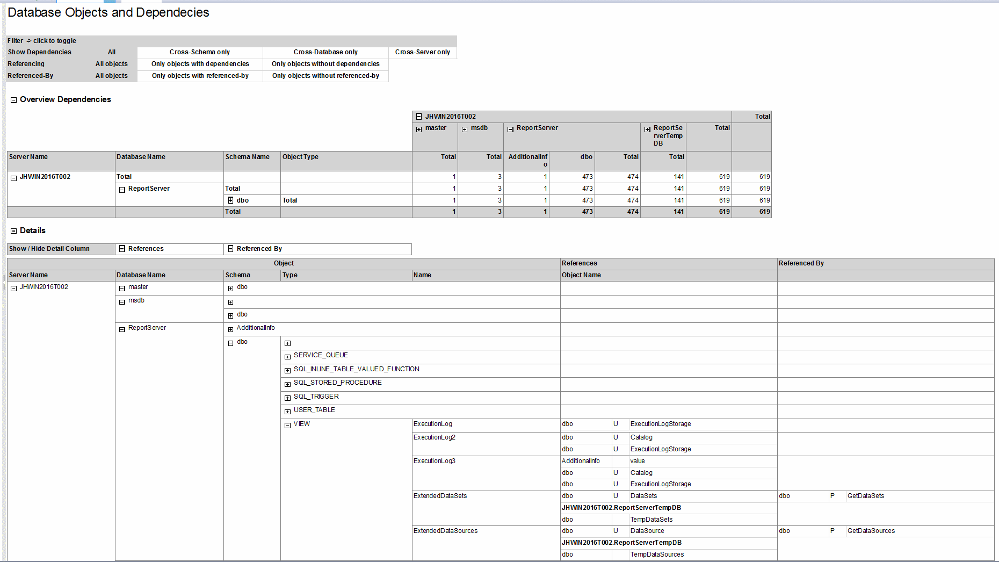
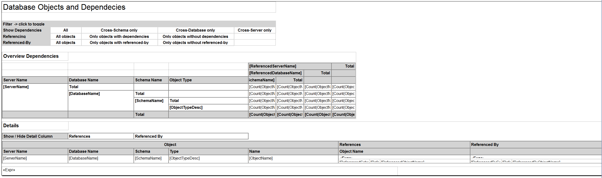
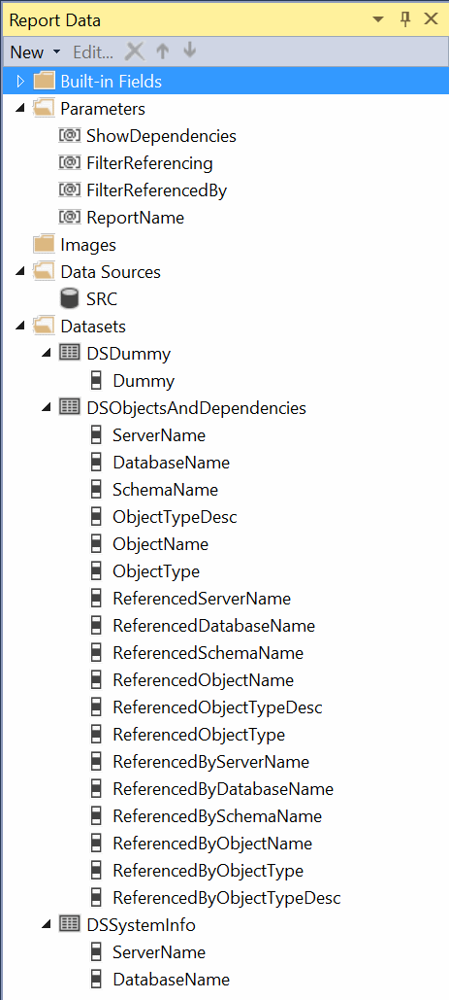
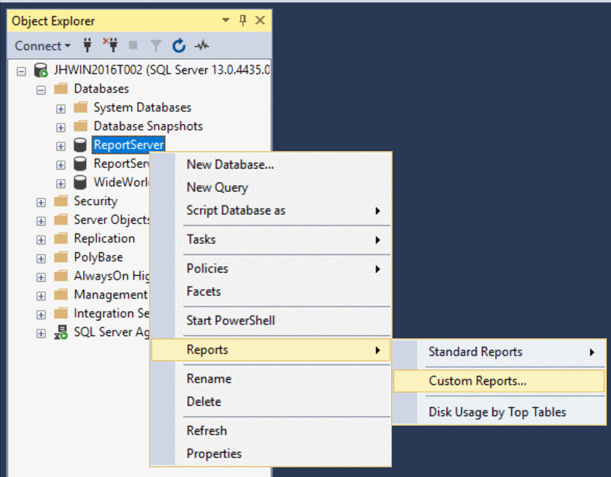

SQL Server exposes very much information using Dynamic Management Views and System Catalog Views. I like the idea of self-documenting systems. Manually maintained documentation tends to be outdated very fast and therefore is obsolete in many cases. What I've missed, is a report visualizing the Database Objects and Dependencies at a glance. Here we go! The result may be used in addition to the self-documenting Report Environment.
The idea is, to see the objects of the current database with their dependencies and where they are referenced by others.
Additionally, I'd like to control the type of dependency: all, only cross-schema, only cross-database or only cross-server.
The result should also be neat and handy to be usable directly within SQL Server Management Studio as Custom Report with no further requirements. And on top, it should work for a current SQL Server Reporting Services Instance (2016) and for SSRS 2012.
How the result should look like
After a parameter pane, an overview with the dependencies and detailed objects and dependencies are listed:

Report Design
Basic Design
The basic design for the report consists of:
- Headline
- Parameter Pane, showing the three report parameters in the report result, and usable as toggle-items to refresh the report with a different parameter set
- Dependencies Overview, a matrix of the result, filtered for rows containing dependencies
- Details, starting with Column-Toggle-Items (Table bound to Dummy-Dataset) and the actual Detail-Table
Design View:

Parameter Pane
The parameter pane is based on the Dummy-Dataset, rendering all rows as header-rows.
Cells containing the currently selected parameter are not rendered as links using a dynamic report action, e.g. "all"-Cell for ShowDependencies:
=IIf(Parameters!ShowDependencies.Value = "all", Nothing, Parameters!ReportName.Value)
The background color for cells containing the currently selected parameter is set to grey, e.g. cells for ShowDependencies:
=IIf(Parameters!ShowDependencies.Label = me.Value, "LightGrey", "White")
Overview
The overview is a matrix for all rows containing references, using the following filter condition:
<Filters> <Filter> <FilterExpression>=Fields!ReferencedObjectName.Value</FilterExpression> <Operator>NotEqual</Operator> <FilterValues> <FilterValue>=Nothing</FilterValue> </FilterValues> </Filter> </Filters>
Details
The details are listed as grouped table containing object details and further columns for References and Referenced By:
- Column-Visibility could be toggled with textboxes of separate table.
- 2nd Header-Row of main-table also contains a sub-table for each column with the corresponding row-headers.
- Bookmark-Actions for objects mentioned as reference or referenced-by to enable direct navigation within report.
Toggle-Items:
- Initially, the rows for all non-dbo-Schema of the current database are shown, each other rows are collapsed by default.
- The reference-column is visible by default.
- The referencedBy-column isn't visible by default.
Report Data Elements
The report is based on a single Data Source and some Report Parameter and Datasets.
Overview

Report Parameter
- ShowDependencies, filters dependencies: all / Cross-Schema / Cross-Database / Cross-Server
- FilterReferencing: all / with / without
- FilterReferencedBy: all / with / without
- ReportName: hidden, used for report actions, executing the current report with a different parameter set.
When executed as SSMS Custom Report, the value for Globals!ReportName is not set. Therefore, this parameter is used as single point of calculation for all report actions:
=IIf(Globals!ReportName = "", "SSRS-DatabaseObjectsAndDependencies", Globals!ReportName)
Getting the data
I'd like to look at several aspects to gather the information for this report. The overall query is to big to be a reasonable part of this post - take a look at the report definition to get the full query.
Getting the details for foreign keys
The System Catalog View sys.foreign_keys contain the foreign keys of the current database:
SELECT -- source @@SERVERNAME AS SourceServerName, DB_NAME() AS SourceDatabaseName, OBJECT_SCHEMA_NAME(src.object_id) AS SourceSchemaName, src.[type] AS SourceObjectType, src.type_desc AS SourceObjectTypeDesc, src.name AS SourceObjectName, -- destination @@SERVERNAME AS DestinationServerName, DB_NAME() AS DestinationDatabaseName, OBJECT_SCHEMA_NAME(dest.object_id) AS DestinationSchemaName, dest.[type] AS DestinationObjectType, dest.type_desc AS DestinationObjectTypeDesc, dest.name AS DestinationObjectName FROM sys.foreign_keys AS k -- Foreign Keys are only within same database LEFT JOIN sys.objects AS src ON src.object_id = k.parent_object_id LEFT JOIN sys.objects AS dest ON dest.object_id = k.referenced_object_id -- Hide self-references WHERE k.parent_object_id <> k.referenced_object_id
Getting the details for SQL references
SQL Server exposes the dependency information, e.g. of stored procedures or views in a System Catalog View sys.sql_expression_dependencies. References within the same database are there, but also references to other databases or even to remote objects. This may also contain references to obsolete objects, which no longer exist.
SELECT -- source @@SERVERNAME AS SourceServerName, DB_NAME() AS SourceDatabaseName, OBJECT_SCHEMA_NAME(src.object_id) AS SourceSchemaName, src.[type] AS SourceObjectType, src.type_desc AS SourceObjectTypeDesc, src.name AS SourceObjectName, -- destination ISNULL(r.referenced_server_name, @@SERVERNAME) AS DestinationServerName, ISNULL(r.referenced_database_name, DB_NAME()) AS DestinationDatabaseName, ISNULL(r.referenced_schema_name, OBJECT_SCHEMA_NAME(r.referenced_id)) AS DestinationSchemaName, dest.[type] AS DestinationObjectType, dest.type_desc AS DestinationObjectTypeDesc, r.referenced_entity_name AS DestinationObjectName FROM sys.objects AS src INNER JOIN sys.sql_expression_dependencies AS r ON r.referencing_id = src.object_id LEFT JOIN sys.objects AS dest ON dest.object_id = r.referenced_id WHERE -- Hide references to temporary objects within Stored Procedure NOT (src.type_desc = 'SQL_STORED_PROCEDURE' AND r.referenced_id IS NULL AND r.referenced_schema_name IS NULL)
Getting the details for Objects
The objects of the current database are exposed in the System Catalog View sys.objects. The common name of table types may differ and therefore the one of sys.table_types is used.
SELECT @@SERVERNAME AS ServerName, DB_NAME() AS DatabaseName, OBJECT_SCHEMA_NAME(src.object_id) AS SchemaName, src.[type] AS ObjectType, src.type_desc AS ObjectTypeDesc, ISNULL(srcTableType.name, src.name) AS ObjectName FROM sys.objects AS src -- in case of Table Types, name in sys.objects differs from actual name in sy.table_types LEFT JOIN sys.table_types AS srcTableType ON srcTableType.type_table_object_id = src.object_id
Overall process
Steps to get the overall result:
- The data of all known dependencies in the current database for foreign keys and SQL references are gathered.
- The filtered result using parameter @ShowDependencies (all / Cross-Schema / Cross-Database / Cross-Server) is stored in a temporary table #AllReferences.
- The object details for all objects of the current database are stored in a temporary table #AllObjects.
- Objects only mentioned in dependencies, based on #AllReferences, are added to #AllObjects.
- Objects of the following type are not listed in the result itself:
INTERNAL_TABLE, SYSTEM_TABLE, CHECK_CONSTRAINT, DEFAULT_CONSTRAINT, FOREIGN_KEY_CONSTRAINT, PRIMARY_KEY_CONSTRAINT, UNIQUE_CONSTRAINT
In case of constraints, they're in the result as dependency information for their tables without mentioning the name of the actual constraint: No "FK_xyz_abc" in the result, but a reference of table xyz to table abc and vice versa as referenced-by. - Building up the overall result, combining the data of #AllObjects and #AllReferences to a single table.
Columns of the overall result including object itself, dependencies as Referenced..., dependent objects as ReferencedBy...:
- ServerName
- DatabaseName
- SchemaName
- ObjectType
- ObjectTypeDesc
- ObjectName
- ReferencedServerName
- ReferencedDatabaseName
- ReferencedSchemaName
- ReferencedObjectType
- ReferencedObjectTypeDesc
- ReferencedObjectName
- ReferencedByServerName
- ReferencedByDatabaseName
- ReferencedBySchemaName
- ReferencedByObjectType
- ReferencedByObjectTypeDesc
- ReferencedByObjectName
Constraints
Play by the rules: Reports for SQL Server Management Studio (SSMS)
In order to get the report executable also directly in SSMS, it may not reference Shared DataSources, Shared DataSets and Subreport, also Parameter-Handling is constrained. Therefore, the report does all the work itself, not referencing anything else but a database, which objects and dependencies are analyzed. Also the parameter handling is done in the result using a custom parameter pane and report actions executing the current report with different parameter set.

Differences between Report Versions
There are only very few differences between the Report Definitions for SSRS 2008R2 (including 2012 / 2014) and SSRS 2016:
- Schema of RDL-File
- 2008R2: http://schemas.microsoft.com/sqlserver/reporting/2010/01/reportdefinition
- 2016: http://schemas.microsoft.com/sqlserver/reporting/2016/01/reportdefinition
- ReportParametersLayout
With SSRS 2016, the layout of the parameters is customizable. Within the RDL-File, this is stored as ReportParametersLayout-Element.
The SSRS 2016 Report may also work with newer versions - as long as the schema doesn't change.
The Query itself is based on System Catalog Views, available in SQL Server >= 2008 and Azure SQL Database.
Conclusion
The result became very complex, but in the end, it fulfills the purpose. Knowing the parts and how they fit together, the overall picture should be complex, but no longer complicated. Using this report, you should be able to easily analyze and document database dependencies.
There may be further extensions to this report, not only to list objects and dependencies of the current database but of all databases of a server - e.g. using the very famous but also very shy and therefore officially undocumented stored procedure sp_MSforeachdb. Doing so may blow up the interoperability with Azure SQL Database. But there is also a way to work around this, resulting in a compatible version.
Do you feel challenged? It's up to you! Start going beyond and please share your insights!